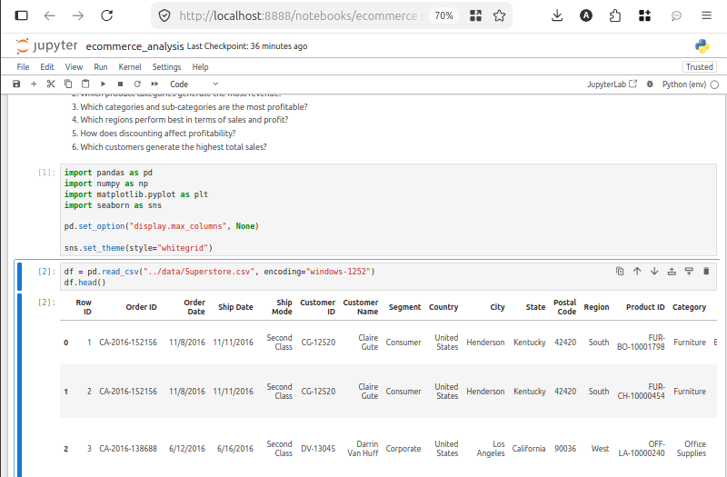
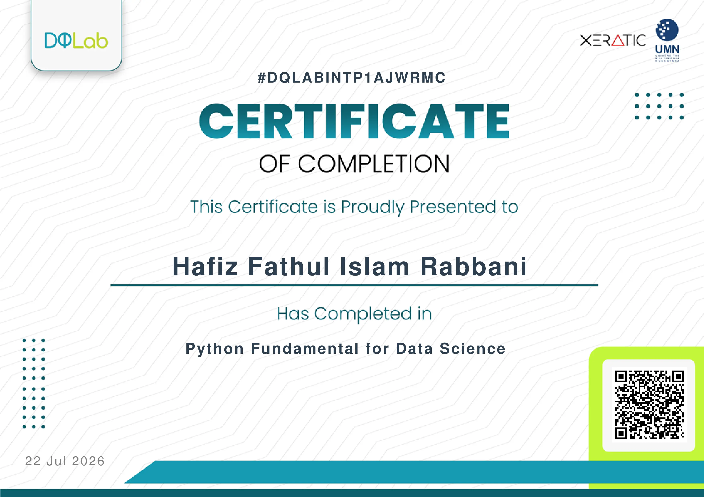

Hi! I'm Fathul, glad you stopped by.
Welcome to my Digital Space!
Where I turn curiosity into ideas, experiments, and digital work.
About Me
I'm an aspiring data analyst with a growing foundation in data collection, cleaning, and analysis using tools like Google Sheets, Python, Pandas, and SQL. I enjoy turning raw datasets into insights that actually mean something.
My analytical process is grounded in a habit of breaking problems into small, testable steps. This mindset has been shaped through self-directed learning and hands-on projects like E-Commerce Sales & Profitability Analysis.
Outside of data work, I also explore web development and game design as creative outlets. Different mediums, same core interest: building things that make sense of complexity.

Skills & Expertise
A snapshot of the tools and thinking I bring to data-driven work.
Data Analysis
Turning raw datasets into structured insights through cleaning, exploration, and analytical thinking.
Data Visualization
Communicating patterns, trends, and findings through clear and meaningful visualizations.
Tools & Workflow
Using reliable tools and structured workflows to organize, analyze, document, and share projects.
AI-Assisted Workflows
Using structured prompting and AI tools to support research, analysis, ideation, and problem-solving.
Featured Projects
A few things I'm working on or have completed.

E-Commerce Sales & Profitability Analysis
Analyzed 9,994 e-commerce transaction records using Python, Pandas, and Jupyter Notebook to evaluate sales performance, profitability, product performance, regional trends, and the impact of discount levels on business outcomes.
The analysis identified key revenue and profit drivers, highlighted underperforming product categories, and revealed a strong relationship between higher discount levels and negative profitability. The project demonstrates an end-to-end data analysis workflow, from data cleaning and feature engineering to exploratory analysis, visualization, and business insight generation.
Ruang Digital Fathul
Ruang Digital Fathul is a digital space documenting my projects, experiments, and creative work in tech.
Teleported
Teleported is a story-driven action-adventure game developed by Nirantara Interactive. It invites players to explore a mysterious world through emotion-based combat, blended with exploration, puzzles, and a narrative centered on the character's journey. Teleported is still in development, with work spanning gameplay mechanics, story writing, asset creation, and implementation using Godot Engine 3. This project marks Nirantara Interactive's first step toward delivering an experience that blends action, emotion, and deep storytelling.
Certificates & Awards
A few milestones from my ongoing learning journey.

National-Level Basic Medicine
5 Maret 2024
ISQO Biology
21 September 2025
Python Fundamentals for Data Science
July 22, 2026MORE TO BE ADDED SOON
NoneMORE TO BE ADDED SOON
NoneLet's Connect
Have a question, a collaboration idea, or just want to say hi? The door's always open.
Full Contact Page